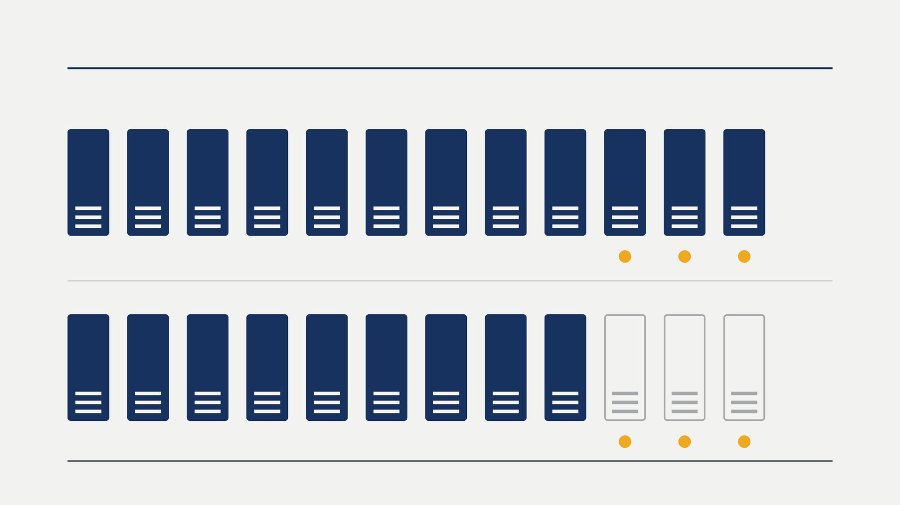

Itapema · Poder Público
Itapema · Poder PúblicoItapema vota nesta terça a LDO de 2027, com R$ 954,3 milhões de receita prevista, R$ 10 milhões acima do que a Prefeitura já espera arrecadar neste ano
O passo anterior desta votação, com a conta da receita aberta.
A Câmara de Itapema aprovou nesta terça, em primeira votação, o projeto que fixa as diretrizes do orçamento de 2027. O registro da Casa marca 12 votos favoráveis, nenhum contrário, nenhuma abstenção e nenhuma ausência, e nenhuma emenda foi apresentada ao texto. Fomos abrir a ficha da LDO do ano passado para comparar: em 14 de outubro de 2025 ela passou por 9 a 3, e os três que votaram contra naquela noite, Raquel Aparecida Josino, Saulo Salustiano Ramos Neto e Yagan Dadam, votaram a favor desta. A segunda votação já está marcada para o dia 20. E a emenda de vereador, que não apareceu em nenhuma das duas LDOs, apareceu 83 vezes na LOA do ano passado, que é a lei que distribui o dinheiro.
Em 30 segundos · Modo de Leitura, formato original Santa Informa
A Câmara de Itapema se reuniu na terça, 13 de outubro.
Foi a 33ª sessão ordinária do ano.
Só um item estava na ordem do dia.
Era a LDO de 2027, o PL 545/2026.
LDO é a lei que orienta o orçamento.
Ela foi aprovada em primeira votação.
O placar foi de 12 a 0.
Nenhum contrário, nenhuma abstenção.
Nenhuma ausência, diz o registro.
Na presidência estava Zulma Souza.
Nenhuma emenda foi apresentada ao texto.
A segunda votação é dia 20 de outubro.
Fomos ver a LDO do ano passado.
É o PL 441/2025, para o ano de 2026.
Ela foi votada em 14 de outubro de 2025.
Passou por 9 a 3, não por 12 a 0.
Os três contrários estão na ata.
São Raquel Aparecida Josino,
Saulo Salustiano Ramos Neto
e Yagan Dadam.
Na segunda votação, foi 9 a 3 de novo.
Nesta terça, os três votaram a favor.
A ata de 2025 não diz o motivo do voto.
A ata desta terça ainda não saiu.
A última publicada é a de 6 de outubro.
Nenhuma emenda nas duas LDOs.
Agora a LOA, que é outra história.
LOA é a lei que distribui o dinheiro.
A LOA de 2026 foi o PL 654/2025.
A ficha dela lista 83 emendas.
São 77 impositivas e 6 modificativas.
Essa LOA passou por 12 a 0.
Nas duas votações, em dezembro.
Virou a Lei 4855, de 19/12/2025.
O calendário dos dois anos é quase igual.
Em 2025 a LDO foi votada dia 14.
Em 2026, dia 13, um dia antes.
Mudou o tempo na comissão.
Em 2025 foram 37 dias até o parecer.
Neste ano foram 21 dias.
A receita prevista é de R$ 954,3 milhões.
Esse número já estava na nossa matéria de terça.
A lista de quem votou mudou um nome.
Em 2025 votou Wanderley Dias.
Nesta terça votou Nei Sassaki.
Nenhuma nota da Câmara deu o placar.
Achamos o resultado no trâmite do projeto.
Não falamos com nenhum vereador.
Poder PúblicoPublicada em Redação Santa Informa

A Câmara de Itapema aprovou na noite desta terça-feira, 13 de outubro, em primeira votação, o Projeto de Lei 545/2026, que fixa as diretrizes para a elaboração do orçamento de 2027. O registro da votação na ficha do projeto é curto e direto: 12 votos favoráveis, nenhum contrário, nenhuma abstenção e nenhuma ausência, com a vereadora Zulma Souza na presidência. A LDO era o único item da ordem do dia e nenhuma emenda foi apresentada ao texto. A segunda votação, que é obrigatória neste tipo de projeto, já está agendada para a 34ª sessão, no dia 20 de outubro.
Doze a zero não é o placar de sempre. Fomos abrir a ficha da LDO anterior, o PL 441/2025, que tratava do orçamento de 2026. Ela foi votada em 14 de outubro de 2025 e passou por 9 a 3. A ata daquela sessão registra o nome dos três que votaram contra, e a ficha do projeto confirma: Raquel Aparecida Josino, Saulo Salustiano Ramos Neto e Yagan Dadam. Na segunda votação, uma semana depois, o placar foi 9 a 3 de novo. Nesta terça, os três votaram a favor. A ata de 2025 anota o voto e não registra justificativa de nenhum deles, e a ata desta terça ainda não foi publicada.
A LDO é a lei que diz como o orçamento vai ser feito: estimativa de receita, metas, regras para despesa de pessoal, prioridades. Quem distribui o dinheiro é a LOA, a lei orçamentária anual, que chega depois. A diferença entre as duas aparece inteira no sistema da Câmara. Nenhuma das duas LDOs, a de 2026 e a de 2027, recebeu uma única emenda de vereador. Já a LOA de 2026, o PL 654/2025, tem 83 emendas ligadas à ficha dela, sendo 77 impositivas e 6 modificativas. Essa LOA também foi aprovada por 12 a 0, nas duas votações, e virou a Lei nº 4.855, de 19 de dezembro de 2025.
O trajeto dos dois anos é quase o mesmo. Em 2025 o projeto chegou em 29 de agosto, foi lido em 2 de setembro, ficou 37 dias na Comissão de Finanças e Orçamento e foi votado em 14 de outubro, virando a Lei nº 4.813, de 24 de outubro. Neste ano chegou em 27 de agosto, foi lido em 1º de setembro, ficou 21 dias na mesma comissão e foi votado em 13 de outubro, um dia antes na comparação. Nos dois anos o parecer da comissão foi favorável. A receita prevista na LDO de 2027 é de R$ 954,3 milhões, número que abrimos na matéria de terça.
Um detalhe deixa a comparação honesta: a lista de quem votou mudou um nome. Em 14 de outubro de 2025 consta o voto de Wanderley Dias, que não está na composição atual da Casa. Nesta terça consta o de Nei Sassaki. Os outros onze nomes são os mesmos nas duas votações.
O resumo de 30 segundos está no topo e a versão completa é o texto acima. Aqui ficam as três leituras da casa sobre o mesmo assunto.
Clara, a otimista
Doze a zero em cima de orçamento é uma notícia boa, e eu vou defender isso. Orçamento aprovado sem racha é orçamento que chega na segunda votação sem suspense, e dá à Prefeitura tempo de desenhar a LOA com regra firme na mão. Quem espera creche, posto de saúde ou rua pronta não ganha nada com briga em outubro.
E tem uma leitura ainda melhor no caso dos três. Votar contra um ano e a favor no outro é alguém que olhou o texto de novo. Pode ter mudado o texto, pode ter mudado a conversa dentro da comissão, pode ser que a dúvida de 2025 tenha sido respondida. Vereador que muda de posição quando o documento muda está fazendo o trabalho direito. O contrário disso, que é votar no automático, seria bem pior.
Seu Prudêncio, o criterioso
Merece atenção o fato de a LDO passar duas vezes seguidas sem uma emenda sequer. A LDO é exatamente o momento de fixar prioridade: ela diz quais áreas entram na frente quando a receita não chegar inteira. Quando a emenda só aparece na LOA, e no ano passado foram 83, o vereador está discutindo valor dentro de um desenho que já veio pronto. É mais trabalhoso mexer ali do que na regra que vem antes.
Vale acompanhar também o tamanho do número. São R$ 954,3 milhões previstos. Previsão alta cobra arrecadação alta, e a LDO é o documento onde se escreve o que acontece se a receita vier abaixo do esperado. Uma sugestão útil seria a Comissão de Finanças publicar, junto do parecer, um resumo de duas páginas em linguagem simples do que mudou da LDO anterior para esta. O relatório de análise já existe e está assinado.
E é justo reconhecer o que funcionou. O prazo melhorou de verdade: o parecer saiu em 21 dias neste ano contra 37 no ano passado, e a votação ficou em outubro, com folga antes da LOA. Orçamento discutido com tempo é orçamento melhor, e essa parte a Casa entregou.
Caco, o sarcástico
Doze a zero. Em Itapema, só a LDO e os clássicos de fim de temporada terminam com placar desses. Ano passado era 9 a 3 e eu achei que tinha virado tradição. Pois é, durou um ano.
Reclamação registrada: a Câmara avisou com nota que a LDO ia a voto, com valor, percentual e série de cinco anos, bonita de ler. Terminou a votação e o resultado ficou guardado no histórico de trâmite da ficha do projeto, que é tipo o porão do site. Fui eu quem teve que descer lá com a lanterna.
Mas tá bom porque o porão é organizado. Tem data, tem hora, tem o nome de cada um e como votou, e tem o do ano passado também, que é o que deixou a comparação de pé. Tem cidade onde você não descobre nem o placar. Aqui você descobre até quem mudou de ideia, com hora marcada: 13 de outubro, 18h35.
Fontes: o resultado, o placar nominal, a data da segunda votação, o parecer da comissão e todo o histórico de trâmite da LDO de 2027 estão na ficha do Projeto de Lei 545/2026, no sistema da Câmara de Vereadores de Itapema, consultada em 14 de outubro de 2026. O fato de a LDO ser o único item da ordem do dia está no roteiro da 033ª Sessão Ordinária, de 13 de outubro de 2026. Os placares de 9 a 3 das duas votações da LDO anterior, o nome dos três vereadores que votaram contra, a composição de quem votou e as datas de 2025 estão na ficha do Projeto de Lei 441/2025, e o voto contrário dos três aparece também na ata da 036ª Sessão Ordinária, de 14 de outubro de 2025, que é a Ata nº 041 e não registra justificativa de voto. As 83 emendas da LOA de 2026, a contagem entre impositivas e modificativas, os placares de dezembro e a data da sanção estão na ficha do Projeto de Lei 654/2025. A informação de que a ata da sessão desta terça ainda não foi publicada foi conferida na lista de atas da Câmara, cuja última publicação é a da sessão de 6 de outubro. O aviso de que a LDO entraria em votação é a nota publicada pela Câmara. As contas de 21 e 37 dias na comissão, os 47 dias até a primeira votação e a comparação de calendário entre os dois anos são nossas, feitas sobre as datas dessas fichas. A receita prevista de R$ 954,3 milhões e a comparação dela com o que a Prefeitura já espera arrecadar em 2026 estão em Itapema vota nesta terça a LDO de 2027. O que mais aconteceu na mesma sessão está em Vereadores de Itapema já retiraram 248 dos 1.384 projetos que apresentaram, e o tamanho do orçamento da cidade apareceu antes em O orçamento de Itapema passou de R$ 1 bilhão.
Itapema · Poder PúblicoO passo anterior desta votação, com a conta da receita aberta.
 Itapema · Poder Público
Itapema · Poder PúblicoO que mais aconteceu na mesma sessão de terça-feira.
 Itapema · Economia
Itapema · EconomiaDe onde vem o dinheiro que a LDO organiza.